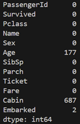

Exploring Titanic Dataset with Pandas
1. Introduction
In this lab we tried to explore the titanic dataset. Firstly, we have to import the pandas as we will put the data into the dataframe and processes later with the help of pandas library.
2. Load the Dataset
Then we have to load the dataset using read_csv function from pandas library.
df = pd.read_csv(“titanic.csv”)
3. Data Exploration
To explore the dataset, we then try to print first 10 data. The result can be shown in figure 1 below.
print(df.head(10))
Figure 1. The result for displaying first 10 data
Since we doesn’t know the data type from each column, try to use dtype function to show the datatypes of each column.
print(df.dtypes)
The result can be shown in figure 2 below. From the figure we can see some of the column datatype is integer, such as passengerId survived, pclass, SibSp, Parch, etc. The other datatype is object, such as Name, Sex, Ticket, etc.
Figure 2. The datatypes for each column
The next thing we use another function called describe to descsribe the statistic of the dataset.
print(df.describe())
The result from above command is shown in figure 3 below. From the result, show that the column PassengerId datacount is 891, the mean is 446, the standard deviation is 257.353842, minimum value is 1, and max is 891. The other column also explored with the same parameters (count, mean, std, min, max).
Figure 3. The dataframe statistic function
4. Data Cleaning
Using data cleaning function such is isnull, dropna, etc, we can do data cleaning process to the dataset. Figure 4 show the result of isnull function, to show how many null data is on the dataset.
print(df.isnull().sum())

Figure 4. The number of Null data in the dataset
From figure 4, we can see that there are 177 null data in Age column, 687 null data in Cabin column, and 2 null data in embark column. We have to clean those null data. We use this function to process the data cleaning.
df["Age"] = df["Age"].mean()
df = df.dropna()
Then after running that command, the result of isnull command summary is shown in figure 5 below.
Figure 5. The number of Null data in the dataset after data cleaning process
5. Data Analysis
To count the passengers by gender, we use this statement:
print(df["Sex"].value_counts())
And the result is below
Using the average function of dataframe, we have the following result
6. Data Visualization
7. Conclusion
The titanic dataset shows how we know some function of python pandas library to be used for Exploratory Data Analysis.
The importance of data cleaning is very important since the data may have many noise, that can make the statistic data is not correct.